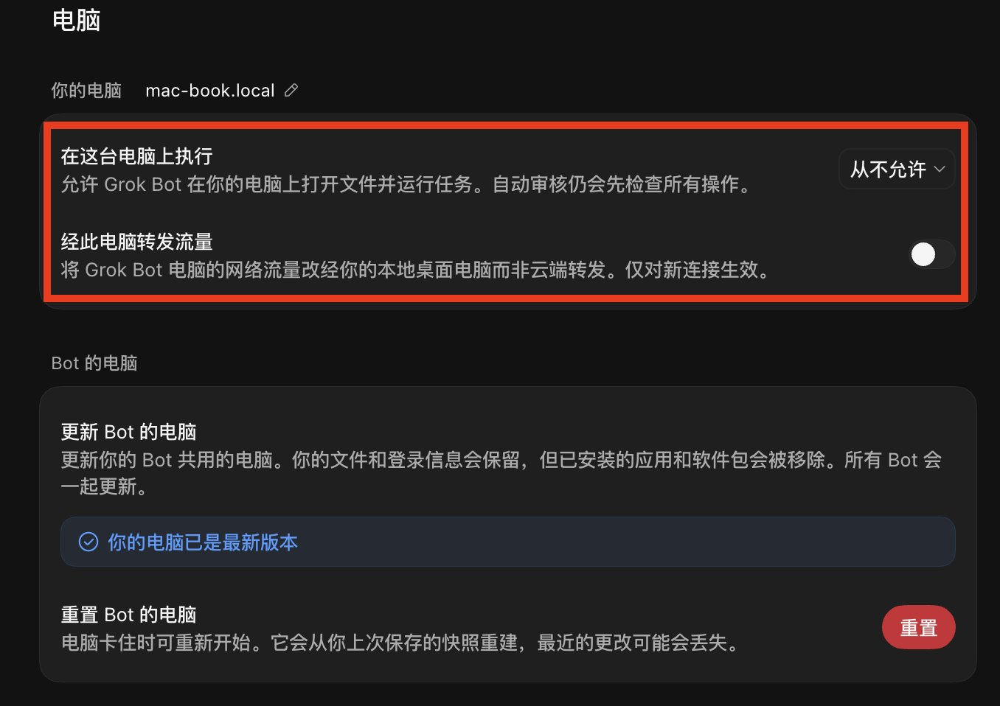
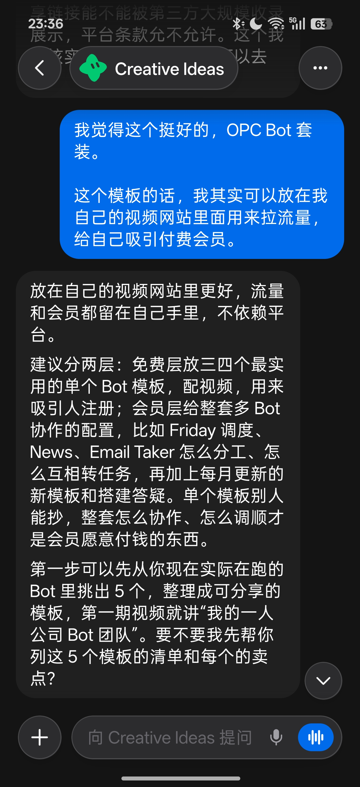
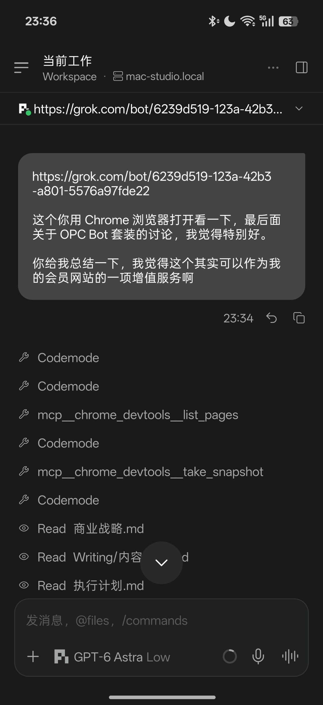

西堂 picks · 20/24
如何让 Grok Bot 更安全，这是你一安装好就设置的。
@fankaishuoai · 范凯说AI · Sun Oct 18 08:44:00 +0000 2026
如何让 Grok Bot (xAI's AI assistant that comes with its own computer) 更安全，这是你一安装好就设置的。
如果你安装了 Grok Bot 桌面端 App，切记一定要关掉：“在这台电脑上执行”，也关掉“经此电脑转发流量”。
1. 让 Grok Bot在你本地电脑上执行，非常不安全！！！
这意味着一台云端虚拟机，可以随意操控你个人电脑，读取你电脑上的文件和数据，也许还有密钥。一旦云端被黑，你的个人电脑就裸奔了，甚至成为“肉鸡”(被操控用来攻击其他电脑)。
我不懂为什么现在的孩子一点基本网络安全意识都没有。但是我绝对不会让云端的Grok Bot碰我本地的文件。
必须建立必要的隔离，只允许本地 Agent (an AI that takes steps on its own to finish a task) 操控云端Grok Bot，不能反过来让云端Grok Bot操控本地的电脑。
2. 不要让云端Grok Bot经你的电脑转发流量。一来直接暴露你的地址，二来会让 Cloudflare 标记你的来源。
如果你在中国大陆直接用 Grok Bot，你会被标记香港的节点，可能导致后续云端很多服务被拒绝。

Quoted @fankaishuoai
打通云端Grok Bot和本地Agent，我想到一个超级无敌简单，人人一学都会的方法。
本地Chrome浏览器登录Grok网站，然后把Grok Bot的URL贴给本地Agent，让本地Agent在Chrome浏览器里和Grok Bot对话。本地Agent甚至可以直接操控云端Grok Bot了，太帅了。
两边还是完全隔离的环境，也不用担心数据安全问题。
我靠，我不得不佩服自己的脑子，这么简单就解决掉了打通问题。
我之前的解决方案显得如此愚蠢，又是 GitHub (a site for storing and sharing code) 同步，又是 Webhook (a web address that triggers an action when called) 唤醒，白折腾半天，还不如我现在通过本地Chrome浏览器直接搞定。
以下截图：第一张是云端Grok Bot；第二张是本地Paseo。


Link card: this post points to a course or video. Only text and metadata are kept here.
Source: https://x.com/fankaishuoai/status/2111740064409756037
← Grok Bot: How to Build Your First AI Tea 万字长文｜Grok Bot 从入门到精通 →